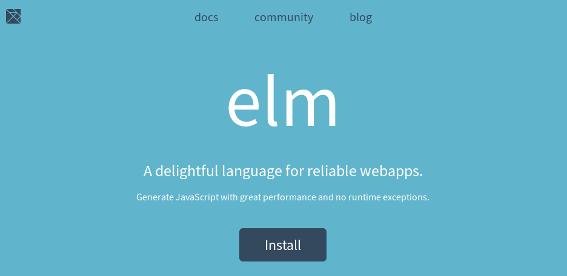
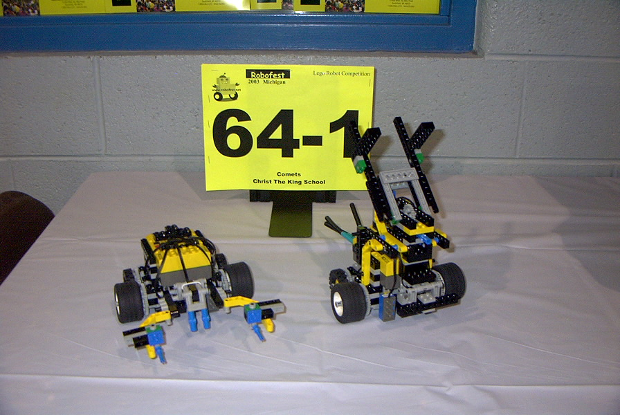
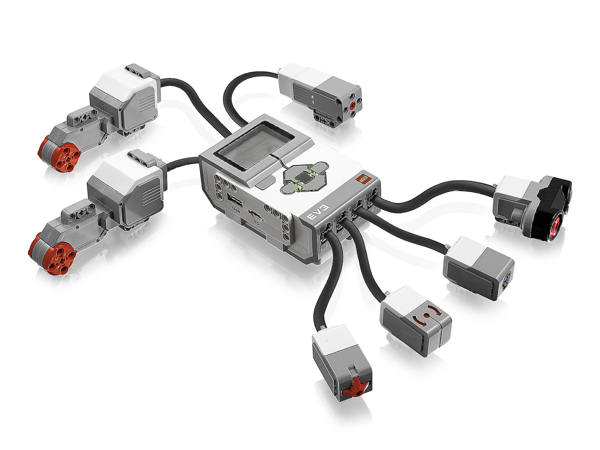
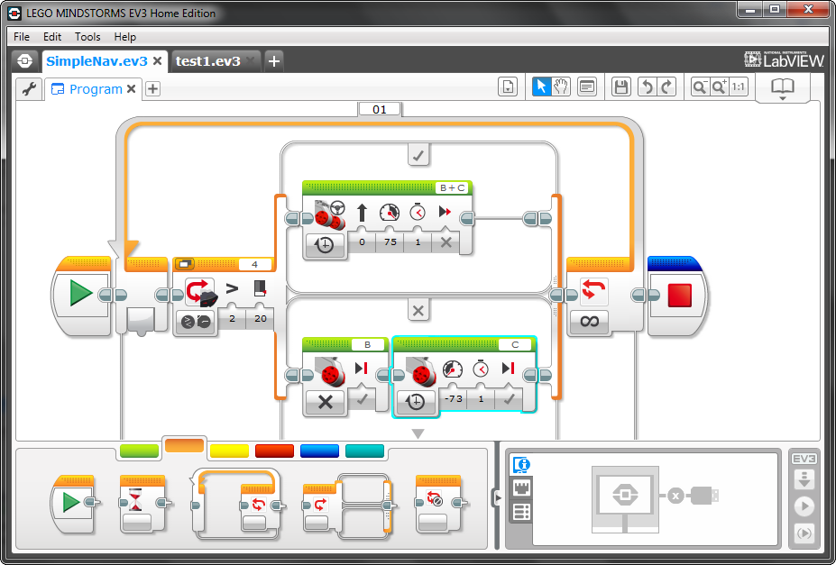
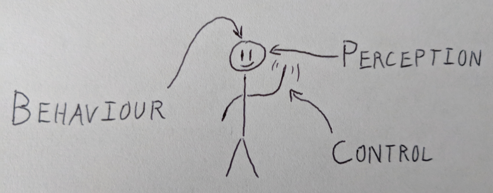
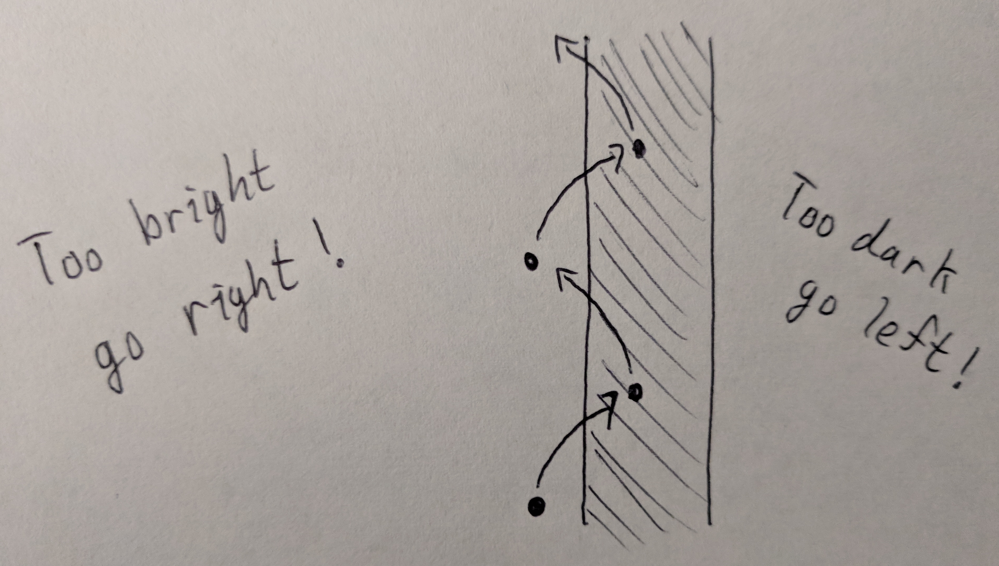
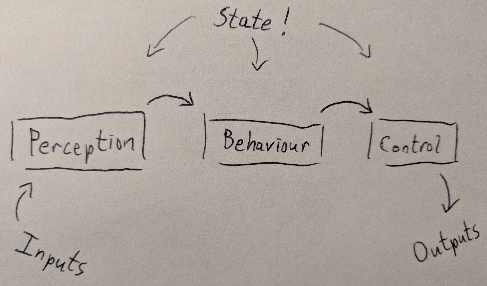
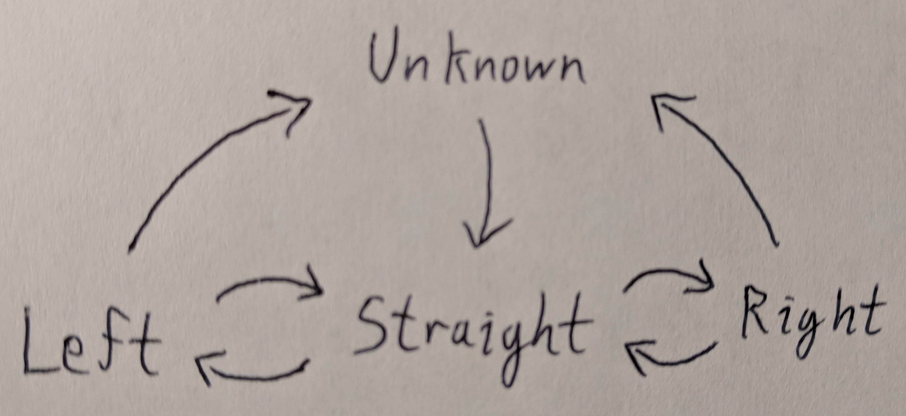
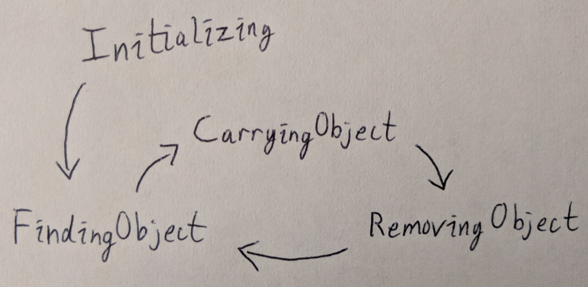

Anthony Deschamps
September 26, 2018




(all the hard work I didn’t have to do)
A Debian distribution for LEGO Mindstorms with API bindings for C, C++, Python, Go, JavaScript

Follow a line

function updateInput() {
app.ports.inputs.send({
lightSensor : lightSensor.reflectedLightIntensity,
// ...
});
}
function handleOutputs(outputs) {
leftMotor.start(Math.round(SPEED * outputs.leftMotor));
// ...
}
var app = Elm.Main.init();
app.ports.outputs.subscribe(handleOutputs);
setInterval(updateInput, 25);
update input { perception, behaviour, control } =
let
-- Perception
newPerception =
Perception.update input perception
-- Control
newControl =
Control.update newPerception control
-- Behaviour
( newBehaviour, maybeControl ) =
Behaviour.update newPerception newControl behaviour
in
{ perception = newPerception
, behaviour = newBehaviour
, control = maybeControl |> Maybe.withDefault newControl
}Just a boolean, but by a different name

update : Perception -> Control -> Control
update perception control =
case control of
MoveBy { leftDelta, rightDelta } ->
MoveTo
{ left = perception.wheels.left + leftDelta
, right = perception.wheels.right + rightDelta
}
MoveTo { left, right } ->
if within 5 left perception.wheels.left {- -} then
Idle
else
control
When we find an obstacle, we need to…
Yes!
I think so!
Decide for yourself!
https://github.com/adeschamps/programming-robots-with-elm/
@adeschamps
anthony.j.deschamps@gmail.com
Matt Griffith
Mike Onslow + Elm Detroit